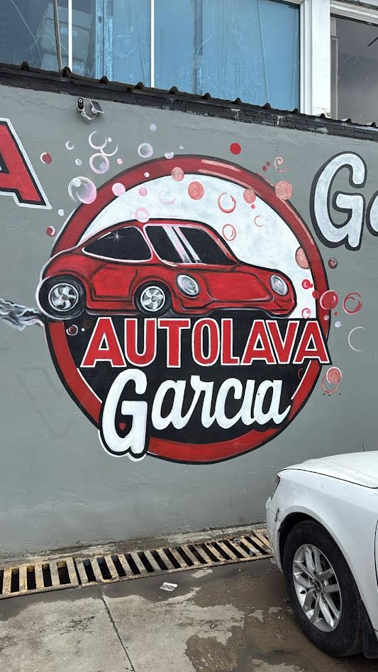
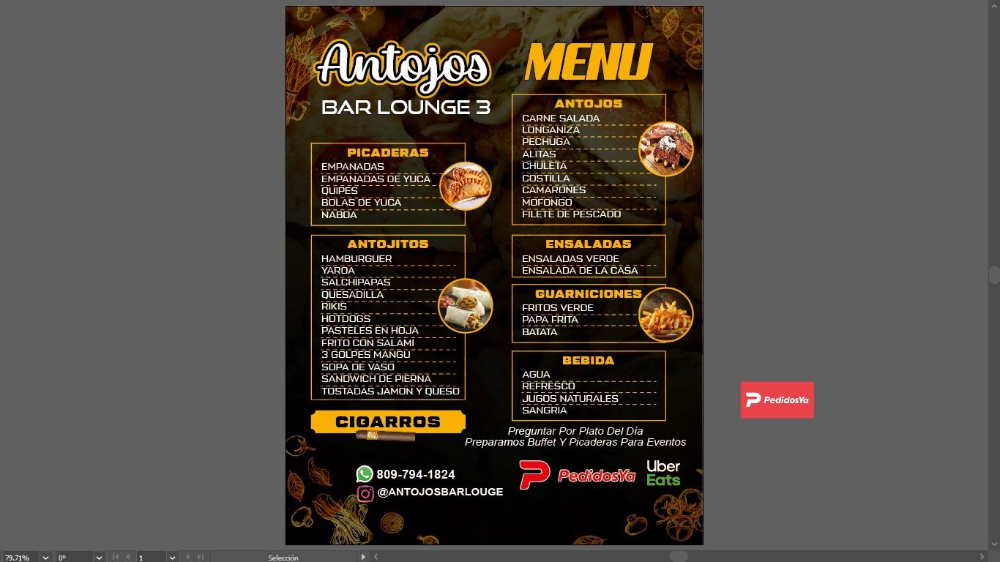
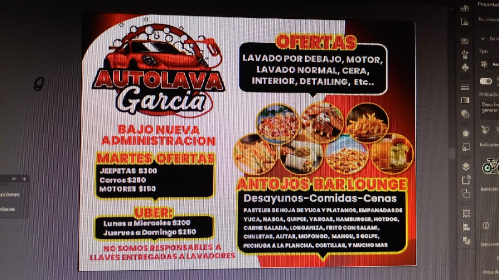

El predio · Av. 27 de Febrero 156
Recorrido del local: lavadero, cafetería y lounge en un solo lugar
Quien llega por primera vez a Auto Lava Garcia y Antojos Bar Lounge suele preguntar lo mismo: ¿el lavado y la comida son el mismo negocio? Sí. Comparten predio, administración y teléfono. Esta página describe lo que ve al entrar, con el mural, el menú y el volante del negocio.

Las fotos de la fachada, la pista y la cafetería están en la ficha del negocio en Google Maps: ver fotos del local en Google Maps.
La fachada y el mural
El mural circular con el nombre Auto Lava Garcia es la señal más clara desde la avenida. No dependa solo del pin del GPS: en una vía ancha de Santiago es fácil pasarse el acceso si va mirando el teléfono. Busque el círculo del logo y la entrada de vehículos. Indicaciones de circulación: cómo llegar.
Zona de lavado
El trabajo de agua, chasis, motor e interior ocurre en el área de pista. Ahí no se fuma, no se dejan niños sueltos y no se discute el precio con quien está enjabonando. El cobro y las llaves pasan por administración, como se explica en llaves y administración.
Un lavado normal exterior (jeepeta RD$400, carro RD$300) es el servicio más corto. Detailing interior desde RD$2,000 o brillo con pulidora desde RD$2,500 ocupan más espacio y tiempo. Si combina un servicio largo con comida, siéntese en Antojos; no se quede en la cola de vehículos “para vigilar”.
Cafetería Antojos Bar Lounge
La cafetería abre más tarde que el lavadero (desde las 10:00 a.m. entre semana; domingo desde 10:30 a.m.) y cierra más tarde los viernes y sábados (hasta las 2:00 a.m.). Hay picaderas, antojitos, platos dominicanos y bebidas. El menú digital del local y el de esta web coinciden en categorías: empanadas, quipes, yaroa, mangú de 3 golpes, mofongo, alitas, jugos, sangría.
Parte de la operación es autoservicio y cocina al momento. Si hay evento o buffet, los tiempos se alargan. Pregunte el plato del día en barra. Pedido WhatsApp = recoger y pagar aquí. Delivery = PedidosYa o Uber Eats.

Lounge y cigarros
Hay un área lounge, más quieta que el túnel de lavado, pensada para adultos. La venta y el consumo de tabaco se limitan a esa zona autorizada. No se fuma en la pista, en la cola de vehículos ni cerca de químicos o equipos. Normas completas en lounge y cigarros.
Volante, ofertas y redes

Las fotos de ofertas (yaroa, pechuga a la crema) se actualizan desde el panel del local cuando hay promoción con fecha. Instagram del lavadero: @AutoLavaGarcia. Instagram de Antojos: @antojosbarlounge. Teléfono único: +1 809-794-1824.
Bajo nueva administración
El predio opera bajo nueva administración con énfasis en precios publicados, trato en caja y las normas de llaves. Lo que sí puede verificar un cliente es el procedimiento: oficina decide, pista ejecuta, cafetería atiende en el mismo terreno. Más contexto en nosotros.